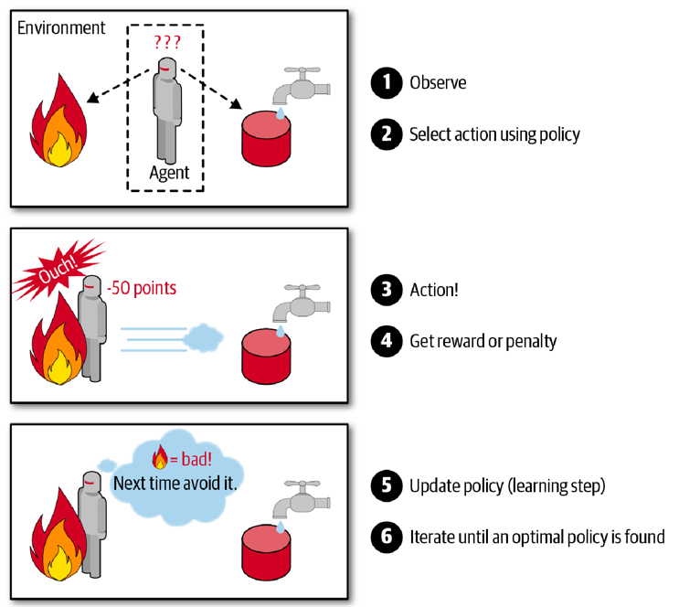
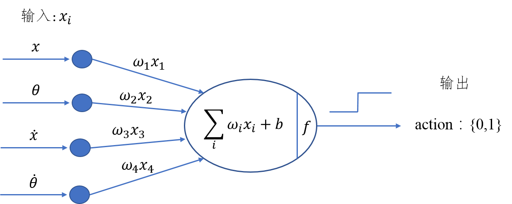
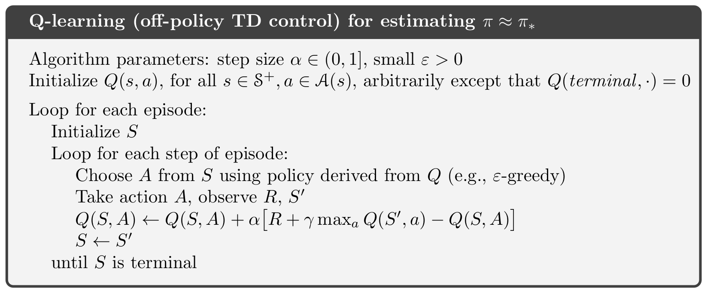
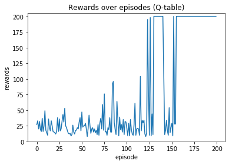

增強式學習
Table of Contents

1. 增強式學習
想像你正在學騎腳踏車：沒有人告訴你「左手用力 3.7 牛頓、右腳踩 45 度」這種標準答案，你只知道一件事 — 摔倒了就是做錯了，沒摔倒就繼續 。透過不斷嘗試和修正，你最終學會了騎車。這就是增強式學習（Reinforcement Learning, RL）的核心精神1。
在 RL 中，有一個 Agent*（代理人）會不斷與 *環境 互動：做出一個動作（Action），環境回饋一個獎勵（Reward），Agent 再根據獎勵調整自己的策略（Policy）。如圖1所示。RL 的目標就是找到一個最佳策略，讓累積的 Reward 最多。
最常見的應用是教 AI 玩遊戲 — 在這種情境下，我們不會對某個動作貼標籤說它是「好」或「壞」，而是根據遊戲的結果（贏或輸、得分或失分）來做為回饋。

Figure 1: 強化學習流程圖
RL 的學習過程就是不斷 try-and-error：做了一個動作 → 看看結果好不好 → 好就記住、不好就避免。強化學習在過去曾被長期忽視，但在 Google DeepMind 成功用它玩 Atari 遊戲後（AI 從零開始學會打磚塊，還自己發現了把球打到磚塊後面的密技），就開始受到大量關注。
常見的 RL 應用領域：
- 電腦遊戲（Atari、星海爭霸）
- 棋類對弈（AlphaGo、AlphaZero）
- 自動駕駛
- 機器人控制
1.1. 與監督式學習的比較
| 比較項目 | 監督式學習 | 增強式學習 |
|---|---|---|
| 學習方式 | 有老師教（給正確答案） | 自己摸索（只知道做得好不好） |
| 圍棋的例子 | 看大量棋譜，模仿人類下棋 | 兩台 AI 互相對弈，自己發明招式 |
| 優點 | 有明確的標準答案，學習效率高 | 能突破人類的經驗限制，可能找到更好的策略 |
| 缺點 | 受限於人類提供的資料品質 | 需要大量的嘗試，訓練時間長 |
1.2. 與深度學習的比較
1.4. 探索與利用的兩難（Exploration vs. Exploitation）
RL 有一個很有趣的兩難問題3：假設你發現了一家還不錯的餐廳，你應該：
- *每次都去那家*（利用 Exploitation）— 穩穩拿到不錯的分數
- *還是嘗試新餐廳*（探索 Exploration）— 可能踩雷，但也可能發現更棒的
這就是 RL 中最經典的 Exploration-Exploitation Tradeoff 。Agent 必須在「利用已知的好策略」和「探索未知的可能性」之間取得平衡。
最常見的做法叫做 $ε$-greedy：設定一個探索率 \(\epsilon\)（例如 0.1），Agent 有 10% 的機率隨機選動作（探索），90% 的機率選目前已知最好的動作（利用）。隨著訓練進行，\(\epsilon\) 會逐漸降低 — 因為 Agent 越來越有經驗了，不需要再那麼常亂試了。

Figure 2: 增強式學習的探索與利用
2. Gymnasium（前身為 OpenAI Gym）
OpenAI Gym 曾經是強化學習界最受歡迎的工具包，提供許多現成的測試環境（遊戲），讓大家可以專心開發 RL 演算法，不用自己寫遊戲。2022 年後，Gym 由 Farama Foundation 接手維護，改名為 Gymnasium ，API 也做了些調整。
安裝方式很簡單：
pip install gymnasium
3. CartPole：讓桿子不要倒！
Gymnasium 上有許多可用的環境，CartPole 是其中最經典也最簡單的一種。想像一台小車上面立著一根桿子（倒立擺），小車可以左右移動，你的目標就是 透過左右移動小車，讓桿子盡可能不要倒下來 。就像你小時候玩過的平衡遊戲一樣！

Figure 3: Cart-pole system
3.1. 執行測試與環境變數
以下是一段最基本的測試程式，讓 Agent 完全隨機地操控小車：
1: import gymnasium as gym 2: 3: # 建立執行環境 4: env = gym.make('CartPole-v1') 5: # 將執行環境初始化（回傳初始觀測值和額外資訊） 6: observation, info = env.reset() 7: for _ in range(100): 8: # 隨機從action_space中挑選下一動作(action)丟入step執行 9: observation, reward, terminated, truncated, info = env.step(env.action_space.sample()) 10: if terminated or truncated: 11: break 12: env.close() 13: print("隨機亂動，遊戲結束！")
如下圖所示，增強式學習的核心就是：Agent 採取 Action，採取行動後環境可能會改變，而環境會給 Agent 一個 Reward，讓 Agent 知道這個 Action 好不好。其中 action 有 0 或 1 兩種可能值，代表將車子向左或向右推動。

Figure 4: Cartpole cycle
就 CartPole 來說，action 丟入環境執行後，可以得到幾個相關的環境資訊（由 step 函式傳回），這些變數可由以下方式取得：
1: import gymnasium as gym 2: 3: env = gym.make('CartPole-v1') 4: observation, info = env.reset() 5: rewards = 0 6: for _ in range(100): 7: action = env.action_space.sample() # 仍然隨機產生 action 8: # action丟入環境執行，傳回環境資訊（5個回傳值） 9: observation, reward, terminated, truncated, info = env.step(action) 10: rewards += reward 11: print(observation) 12: if terminated or truncated: # 回合結束，可能柱子太傾斜或車子跑遠 13: print("Rewards:", rewards) 14: break 15: env.close()
每次執行的結果都不同（因為是隨機動作），但大致上會看到類似這樣的輸出：
[-0.00943879 0.18031594 -0.0417659 -0.35468228] [-0.00583247 0.37600609 -0.04885955 -0.66023713] ... Rewards: 11.0
雖然程式指定跑 100 次動作，但因為隨機亂動，桿子很快就倒了，所以通常 10 幾步就結束了。
3.2. 重要環境變數
在 Gymnasium 的環境中，有兩個重要的空間：動作空間 action_space 和觀測空間 observation_space ，分別描述了 Agent 能做什麼動作、以及能看到什麼資訊。
1: import gymnasium as gym 2: env = gym.make('CartPole-v1') 3: print("動作空間:", env.action_space) 4: print("觀測空間:", env.observation_space)
動作空間: Discrete(2) 觀測空間: Box([-4.8 ...], [4.8 ...], (4,), float32)
由結果可以看出：
action_space是離散型Discrete(2)，代表只有兩個動作：0（向左推）和 1（向右推）。observation_space是連續型Box，代表觀測值是一個長度為 4 的浮點數陣列，每個元素都有上下界。
- Observation（觀測值）:
Type: Box(4)4
Num Observation Min Max 0 Cart Position -4.8 4.8 1 Cart Velocity -Inf Inf 2 Pole Angle -0.418 rad (-24 deg) 0.418 rad (24 deg) 3 Pole Angular Velocity -Inf Inf - Actions（動作空間，離散空間）
Type: Discrete(2)
Num Action 0 Push cart to the left 1 Push cart to the right 註：施加的力大小是固定的，但減小或增大的速度不是固定的，它取決於當時桿子與豎直方向的角度。角度不同，產生的速度和位移也不同。
- Reward（獎勵）
每撐過一步就得到 1 分獎勵（包括結束那一步）。在 CartPole-v1 中，最高可以撐 500 步，所以滿分是 500 分。
- 初始狀態:
初始狀態所有觀測值都從[-0.05, 0.05]中隨機取值。
- 達到下列條件之一即結束一回合:
- 桿子與豎直方向角度超過 12 度（
terminated=True） - 小車位置距離中心超過 2.4（小車跑出畫面，
terminated=True） - 回合步數達到 500 步（
truncated=True，恭喜你撐到滿分！）
- 桿子與豎直方向角度超過 12 度（
3.3. 小練習
上述程式只執行了一回合的模擬，請你修改上述程式，進行 200 回合的模擬，記錄每回合隨機運作的 reward 結果，並將結果畫成折線圖（x 軸為回合數，y 軸為每回合的 reward）。你覺得隨機亂動平均能撐幾步？
4. 直覺反應的 CartPole
前面的程式用隨機方式來操控小車，效果當然很差。但就算是最笨的人，也知道「桿子往左倒，車就往左推」這種直覺反應。讓我們把這個簡單策略寫成程式：
1: import gymnasium as gym 2: 3: env = gym.make('CartPole-v1') 4: observation, info = env.reset() 5: rewards = 0 6: for t in range(500): 7: # 取得目前狀態 8: pos, v, ang, rot = observation 9: # 直覺策略：桿子往左傾就往左推，往右傾就往右推 10: if ang < 0: 11: action = 0 # 車往左推 12: else: 13: action = 1 # 車往右推 14: observation, reward, terminated, truncated, info = env.step(action) 15: rewards += reward 16: if terminated or truncated: 17: print('Rewards:', rewards) 18: break 19: 20: env.close()
這個策略沒有在「學習」，只是一個固定的 if-else 規則。但比起隨機亂動，已經好很多了 — 大概能撐 40~60 步。
Rewards: 51.0
不過離滿分 500 還差得遠。為什麼？因為這個策略只看了「桿子角度」一個特徵，完全忽略了速度、位置等資訊。
4.1. 小練習
上述程式只看了桿子角度，你能否再想出更好的策略？提示：觀察 observation 的 4 個數值，思考哪些資訊也該納入決策。目標是讓 reward 超過 100！
5. Hill Climbing：讓電腦自己找最佳策略 5
前面的「直覺策略」是我們人類自己寫的規則，但如果讓電腦 自己去找 最好的策略呢？這就是「爬山演算法」（Hill Climbing）的概念。
想像你在一座山上，被蒙住眼睛，你要爬到最高點。你的策略很簡單：往四周摸一摸，哪邊比較高就往哪邊走一步。這就是爬山演算法的精神 — 每次微調一點點，如果變好就保留，變差就放棄 。
具體來說，我們建立一個簡單的模型：把觀測值（4個數字）分別乘上一組權重，求加權和，如果和為正就往右推、為負就往左推。模型如下圖所示：

Figure 5: Hill Climbing Model
這個模型的決策公式為：
\[H_{sum} = w_1 \cdot x + w_2 \cdot \theta + w_3 \cdot \dot{x} + w_4 \cdot \dot{\theta} + b\]
如果 \(H_{sum} \geq 0\)，就往右推（action=1）；否則往左推（action=0）。
爬山演算法的流程很簡單：
- 隨機生成一組權重
- 用這組權重跑一回合遊戲，記錄得分
- 在當前最佳權重上加入一點隨機微調
- 如果微調後得分更高 → 更新最佳權重
- 如果沒有改善 → 保持原來的權重
- 重複步驟 3~5，直到找到滿分的權重
5.1. 程式碼
1: import numpy as np 2: import gymnasium as gym 3: import matplotlib.pyplot as plt 4: 5: def run_one_episode(env, weights): 6: """用指定的權重跑一回合，回傳總 reward""" 7: observation, info = env.reset() 8: rewards = 0 9: for t in range(500): 10: # 加權和決定動作 11: action = 1 if np.dot(weights[:4], observation) + weights[4] >= 0 else 0 12: observation, reward, terminated, truncated, info = env.step(action) 13: rewards += reward 14: if terminated or truncated: 15: break 16: return rewards 17: 18: # 爬山演算法主程式 19: env = gym.make("CartPole-v1") 20: np.random.seed(10) 21: 22: best_reward = 0 23: best_weights = np.random.rand(5) # 初始權重隨機 24: reward_history = [] 25: 26: for i in range(300): 27: # 在最佳權重上加入微小隨機擾動 28: new_weights = best_weights + np.random.normal(0, 0.1, 5) 29: r = run_one_episode(env, new_weights) 30: reward_history.append(r) 31: if r > best_reward: 32: best_reward = r 33: best_weights = new_weights 34: if best_reward >= 500: # CartPole-v1 滿分 500 35: print(f"第 {i} 次迭代就找到滿分策略！") 36: break 37: 38: print(f"最佳 reward: {best_reward}") 39: env.close() 40: 41: # 畫出學習過程 42: plt.figure(figsize=(10, 4)) 43: plt.plot(reward_history) 44: plt.xlabel("Iteration") 45: plt.ylabel("Reward") 46: plt.title("Hill Climbing: Reward per Iteration") 47: plt.grid(True) 48: plt.tight_layout() 49: plt.savefig("images/hill_climbing_result.png", dpi=150)
爬山演算法本質上是一種「局部搜尋」的方法 — 效率很高（通常幾十次就能找到不錯的解），但因為不是全局搜索，找到的不一定是最佳解。就像蒙著眼睛爬山，你可能爬到一座小丘就以為到了山頂，卻不知道隔壁還有更高的山。
6. Q-Learning：讓 Agent 自己學會查表決策
前面的爬山演算法只是在「碰運氣」找好的權重，並沒有真正在學習。Q-Learning 才是強化學習中最經典的學習演算法之一6。
Q-Learning 的核心概念很簡單：建立一張「作弊表」（Q-Table），記錄「在某個狀態下，做某個動作，預期能得到多少分」。Agent 每次遇到新狀態時，就查表選擇分數最高的動作。
這張表一開始是空白的（全部填 0），Agent 必須透過一次又一次的嘗試來填入正確的數值。更新公式如下：
\[Q(s_t, a_t) \leftarrow Q(s_t, a_t) + \alpha \Big[ R_{t+1} + \gamma \max_a Q(s_{t+1}, a) - Q(s_t, a_t) \Big]\]
其中：
- \(\alpha\) 是學習率（每次更新幅度多大）
- \(\gamma\) 是折扣因子（多重視未來的獎勵）
- \(R_{t+1}\) 是這一步實際得到的獎勵
- \(\max_a Q(s_{t+1}, a)\) 是下一步最好的預期分數
簡單來說：Agent 不只看眼前的獎勵，還會估計「到了下一個狀態後，最多還能拿多少分」，就像下棋時不只看當前這步，還要想後面幾步。
6.1. Algorithms

Figure 6: Q-Learning Algorithm
用一個經典的比喻來解釋：想像你是一個小朋友，眼前有一顆棉花糖。如果 \(\gamma = 0\)，你只看到眼前的棉花糖就立刻吃掉了；但如果 \(\gamma\) 接近 1，你會想：「如果我現在忍住不吃，等一下可能會有兩顆棉花糖！」。這就是 Q-Learning 厲害的地方 — 它讓 Agent 學會為了更大的未來回報，而犧牲眼前的小利。
6.2. Q-Table 實作細節
上面講了一堆理論，現在讓我們看看 Q-Table 在 CartPole 中要怎麼實作。
由於 CartPole 的 state 是連續值（角度可以是 0.123456…），這樣會有無限多種狀態，沒辦法建一個無限大的表格。所以我們要把連續值「離散化」（discretize），把它們分成幾個區間（bucket）。
例如我們把 state 的 4 個特徵 (position, velocity, angle, rotation rate) 分別離散化成 (1, 1, 6, 3) 個 bucket — 其中 6 個 bucket 代表角度的範圍被切成 6 個區間，區間中的值都對應到同一個離散值。
首先，我們要把連續的觀測值離散化，建立 Q-Table：
1: import numpy as np 2: import math 3: import gymnasium as gym 4: 5: env = gym.make('CartPole-v1') 6: 7: # 每個特徵要切成幾個區間（bucket） 8: n_buckets = (1, 1, 6, 3) 9: n_actions = env.action_space.n # = 2 10: 11: # 建立 Q-table（所有值初始為 0） 12: q_table = np.zeros(n_buckets + (n_actions,)) 13: print(f"Q-table 大小: {q_table.shape}") # (1, 1, 6, 3, 2) 14: 15: # 設定每個特徵的上下界 16: state_bounds = list(zip(env.observation_space.low, env.observation_space.high)) 17: state_bounds[1] = [-0.5, 0.5] # 速度範圍限制 18: state_bounds[3] = [-math.radians(50), math.radians(50)] # 角速度範圍限制 19: 20: def get_state(observation, n_buckets, state_bounds): 21: """將連續的觀測值轉換成離散的 bucket 索引""" 22: state = [0] * len(observation) 23: for i, s in enumerate(observation): 24: l, u = state_bounds[i][0], state_bounds[i][1] 25: if s <= l: 26: state[i] = 0 27: elif s >= u: 28: state[i] = n_buckets[i] - 1 29: else: 30: state[i] = int(((s - l) / (u - l)) * n_buckets[i]) 31: return tuple(state)
state_bounds 初始內容為
[(-4.8, 4.8), [-0.5, 0.5], (-0.41887903, 0.41887903), [-0.8726646259971648, 0.8726646259971648]]
q_table 為 (1, 1, 6, 3, 2) 的 ndarray，初始值全為 0，代表 Agent 一開始對所有狀態-動作的組合完全沒有任何經驗。
再來是 $ε$-greedy 策略。選動作時，有 \(\epsilon\) 的機率隨機選（exploration，探索未知），其他時間照著 Q-Table 選最高分的動作（exploitation，利用已知）：
1: def choose_action(state, q_table, action_space, epsilon): 2: if np.random.random_sample() < epsilon: # 探索：隨機選 3: return action_space.sample() 4: else: # 利用：選 Q 值最大的動作 5: return np.argmax(q_table[state])
做出 action 後，收到 observation 和 reward，就可以更新 Q-Table：
1: # 算出下個 state 的離散值 2: next_state = get_state(observation, n_buckets, state_bounds) 3: 4: # Q-learning 更新公式 5: q_next_max = np.amax(q_table[next_state]) 6: q_table[state + (action,)] += lr * (reward + gamma * q_next_max - q_table[state + (action,)]) 7: 8: # 移動到下個 state 9: state = next_state
訓練過程中，\(\epsilon\) 和學習率 \(\alpha\) 會隨著訓練逐漸降低。一開始 Agent 什麼都不知道，所以多探索（高 \(\epsilon\)）；後期已經學到不少經驗了，就多利用已學的知識（低 \(\epsilon\)）。
1: # epsilon 和 lr 隨回合數遞減 2: get_epsilon = lambda i: max(0.01, min(1, 1.0 - math.log10((i+1)/25))) 3: get_lr = lambda i: max(0.01, min(0.5, 1.0 - math.log10((i+1)/25))) 4: 5: # 每回合開始時更新 6: epsilon = get_epsilon(i_episode) 7: lr = get_lr(i_episode)
成果

7. 增強式學習有多強？7
RL 的戰績相當輝煌：
- 圍棋 ：AlphaGo/AlphaZero 擊敗世界冠軍
- 電玩 ：DeepMind 的 AI 學會玩 57 種 Atari 遊戲，其中 29 種超越人類水準
- 超級瑪利歐 ：AI 透過一次又一次的死亡，學會了跳躍、閃避怪物的時機
- 機器人 ：OpenAI 訓練機械手臂學會轉魔術方塊
那麼 RL 無敵了嗎？當然不是：
- 訓練成本高 ：要跑幾百萬、甚至幾十億次模擬才能學會，非常耗時耗能
- 安全問題 ：自動駕駛中如果 AI 誤判了紅綠燈，後果不堪設想
- 獎勵設計困難 ：如果獎勵函數設計不好，AI 可能會找到「作弊」的方式拿高分，卻完全不是我們想要的行為
RL 很強大也很有趣，但它不是萬能的。在特定領域（遊戲、棋類、機器人控制），RL 可以達到超越人類的表現！
8. 作業：強化學習大冒險
8.1. 作業一：隨機 vs 直覺 — 200 回合大對決
讓隨機策略和直覺策略各跑 200 回合，畫出兩條 reward 折線圖，看看誰比較厲害。
以下範例程式跑 200 回合的「隨機策略」：
1: import gymnasium as gym 2: import matplotlib.pyplot as plt 3: import numpy as np 4: 5: def run_episodes(strategy, n_episodes=200): 6: """跑 n_episodes 回合，回傳每回合的 reward 列表""" 7: env = gym.make('CartPole-v1') 8: rewards_list = [] 9: for _ in range(n_episodes): 10: obs, info = env.reset() 11: total_reward = 0 12: for t in range(500): 13: if strategy == 'random': 14: action = env.action_space.sample() 15: elif strategy == 'intuition': 16: # 直覺策略：桿子往左傾就往左推 17: action = 0 if obs[2] < 0 else 1 18: obs, reward, terminated, truncated, info = env.step(action) 19: total_reward += reward 20: if terminated or truncated: 21: break 22: rewards_list.append(total_reward) 23: env.close() 24: return rewards_list 25: 26: # 只跑隨機策略 27: random_rewards = run_episodes('random') 28: print(f"隨機策略平均 reward: {np.mean(random_rewards):.1f}")
8.2. 作業二：爬山高手 — 微調的藝術
在教材的爬山演算法中，我們用 np.random.normal(0, 0.1, 5) 來產生微調的隨機值，其中 0.1 是「步幅」（step size）。步幅太大，權重會亂跳；步幅太小，搜尋速度太慢。
以下範例程式用步幅 0.1 來跑爬山演算法：
1: import numpy as np 2: import gymnasium as gym 3: 4: def hill_climb(step_size, max_iter=300, seed=42): 5: """用指定步幅跑爬山演算法，回傳找到的最佳 reward 和歷史紀錄""" 6: env = gym.make('CartPole-v1') 7: np.random.seed(seed) 8: best_reward = 0 9: best_weights = np.random.rand(5) 10: history = [] 11: 12: for i in range(max_iter): 13: new_weights = best_weights + np.random.normal(0, step_size, 5) 14: obs, info = env.reset() 15: total = 0 16: for _ in range(500): 17: action = 1 if np.dot(new_weights[:4], obs) + new_weights[4] >= 0 else 0 18: obs, reward, terminated, truncated, info = env.step(action) 19: total += reward 20: if terminated or truncated: 21: break 22: history.append(total) 23: if total > best_reward: 24: best_reward = total 25: best_weights = new_weights 26: env.close() 27: return best_reward, history 28: 29: best, hist = hill_climb(step_size=0.1) 30: print(f"步幅 0.1 → 最佳 reward: {best}")
8.3. 作業三：自創策略挑戰賽 — 你能打敗直覺嗎？
直覺策略只看了桿子角度（ obs[2] ），但 observation 其實有 4 個數值。如果我們把更多資訊加入決策，應該能做得更好！
以下是直覺策略的程式，平均大概能撐 40~60 步：
1: import gymnasium as gym 2: import numpy as np 3: 4: def my_strategy(obs): 5: """直覺策略：只看桿子角度""" 6: pos, vel, angle, ang_vel = obs 7: if angle < 0: 8: return 0 # 往左推 9: else: 10: return 1 # 往右推 11: 12: # 測試策略 13: env = gym.make('CartPole-v1') 14: rewards = [] 15: for _ in range(100): 16: obs, info = env.reset() 17: total = 0 18: for _ in range(500): 19: action = my_strategy(obs) 20: obs, reward, terminated, truncated, info = env.step(action) 21: total += reward 22: if terminated or truncated: 23: break 24: rewards.append(total) 25: env.close() 26: print(f"直覺策略平均 reward: {np.mean(rewards):.1f}")
Footnotes:
Hands-On Machine Learning with Scikit-Learn: Aurelien Geron